AutoMate Building trust between humans and machines
This project was part of an Interaction Design Studio course where our term projects followed the structure of the CHI Design Competition 2018
Interaction Design Visual Design UX Research
5 interaction design students

The Project
The Problem
People who do not trust new technology need an interior interface for autonomous vehicles that explains what the car detects, the decisions it is making, and why it is making these decisions so that they can build greater trust with the vehicle and adopt safer, autonomous methods of transportation.
Following the structure of the CHI Design Competition 2018, our team set out to develop a product concept to engage a community that is hesitant to adopt new technologies, even when they pose as safer alternatives to the way things currently function. Looking in depth at the problem we were trying to solve, we realized that the real issue we were solving for was trust between humans and machines. With this in mind, we developed this interface for the interior of an autonomous vehicle. Our solution provided an interface that visually explained what the vehicle detects, the decisions it makes, and the reasoning behind these decisions.
My Role
While our entire team divided work fairly evenly to gain more experience with each step of product design process, my personal role on this project focused primarily around ideation, interaction design, and visual design. Working with a car interior rather than a desktop or mobile screen posed new challenges, offering many opportunities to learn from mistakes and experiment with the design process.
The Process
Sketching Solutions
We started our brainstorming process by sketching every idea we came up with to solve our problem, feasible or not.
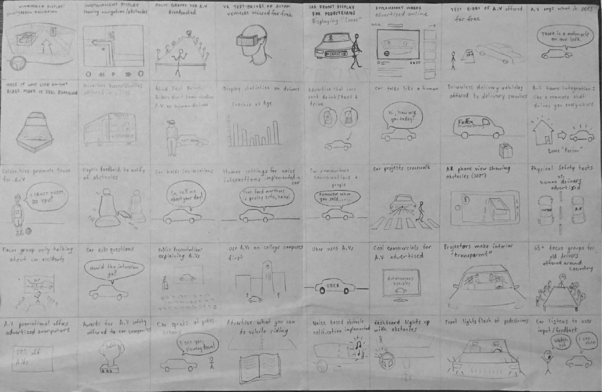Competitive Analysis
After analyzing our ideation sketches, we chose a solution that we wanted to proceed with: an augmented reality interface on a windshield paired with a console display. Our next step was to research existing solutions that would act as competitors to our solution.
Direct competitors included systems such as Mercedes-Benz’s AV Tech and Tesla’s Autopilot as well as other auto manufacturers’ technologies. Indirect competitors included systems such as Domino’s Autonomous Pizza Delivery cars and Starship Technologies’ autonomous delivery robots. These indirect competitors was too see how autonomous vehicles and artificial intelligence interacted with humans and the surrounding environment.
Personas
Our team created personas based off of the primary user groups that we would be targeting with our product. The three user groups we identified were:
1. People over the age of 60 that are hesitant to adopt new technologies
2. People under the age of 60 that are accepting of new technologies
3. Drivers under the age of 25 that want the freedom associated with driving
The example below shows the persona that I created; a secondary persona of a mother looking to buy a car for her teen driver:
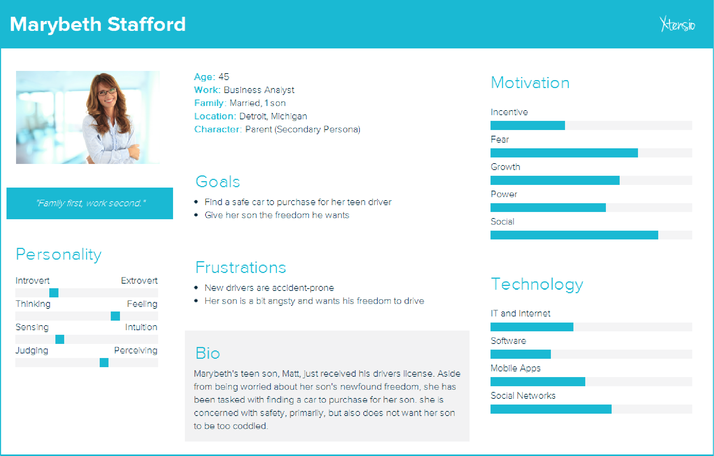Scenarios and Storyboards
Based on the personas we created, we developed four scenarios in which each persona would interact with an autonomous vehicle and our interface. From the scenarios, we created concise storyboards to visually describe the scenarios and summarize them down to their essential interaction points.

QOC and Wireframing:
Beginning the design decision making process, we created simple wireframes for an augmented reality windshield display as well as constructed QOC’s (Questions, Options, Criteria) to help us better understand the design decisions we how they would ultimately affect our solution.
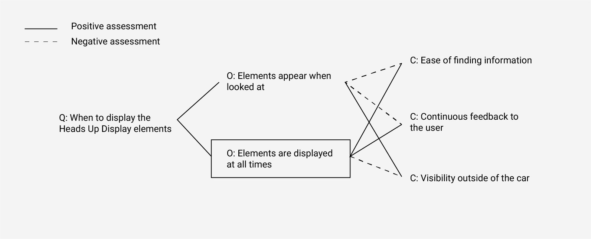
Low fidelity Prototypes
We started prototyping by creating a paper prototype of our product. Since our design involved multiple aspects of the interior of a car, we decided to represent both the windshield and the center console display.

Design Iteration 1
The first high-fidelity digital prototype of our product acted a a rough draft of our product, allowing us to run user tests and receive feedback on how our product works.

Design Iteration 2
Based on feedback from our version 1 prototype, we revised our design to account for issues brought up in user testing such as unclear interface navigation icons and unintuitive mapping between the windshield and console interfaces.
Aside from these issues, we received numerous comments regarding how the interface (specifically, the console interface) is not specific to an autonomous vehicle, nor does it give comprehensive insight into what the car sees and the decisions it is making. This notified us that we had strayed from from our original design requirements. Our revisions attempted to better display outside obstacles and the vehicle’s decision making processes.
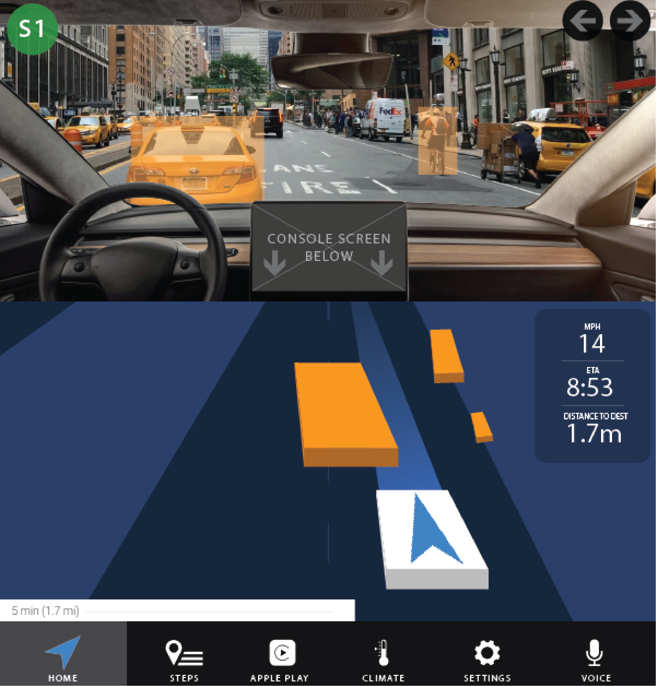 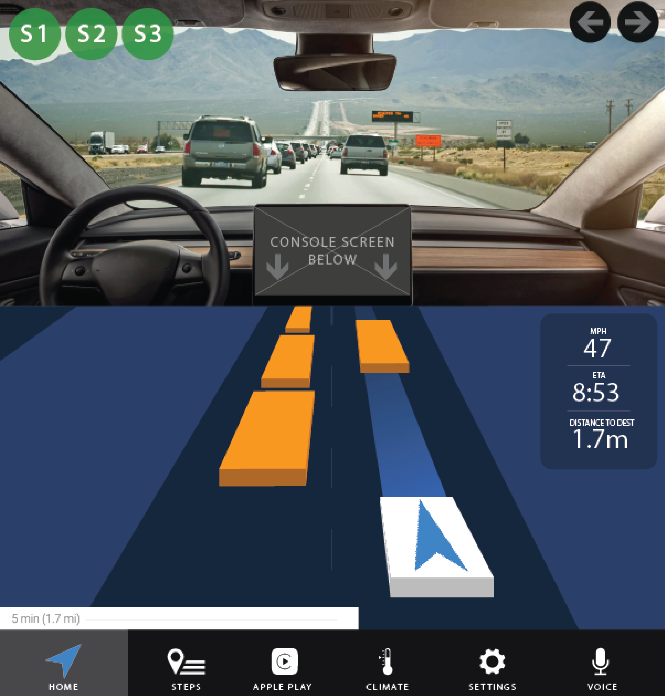 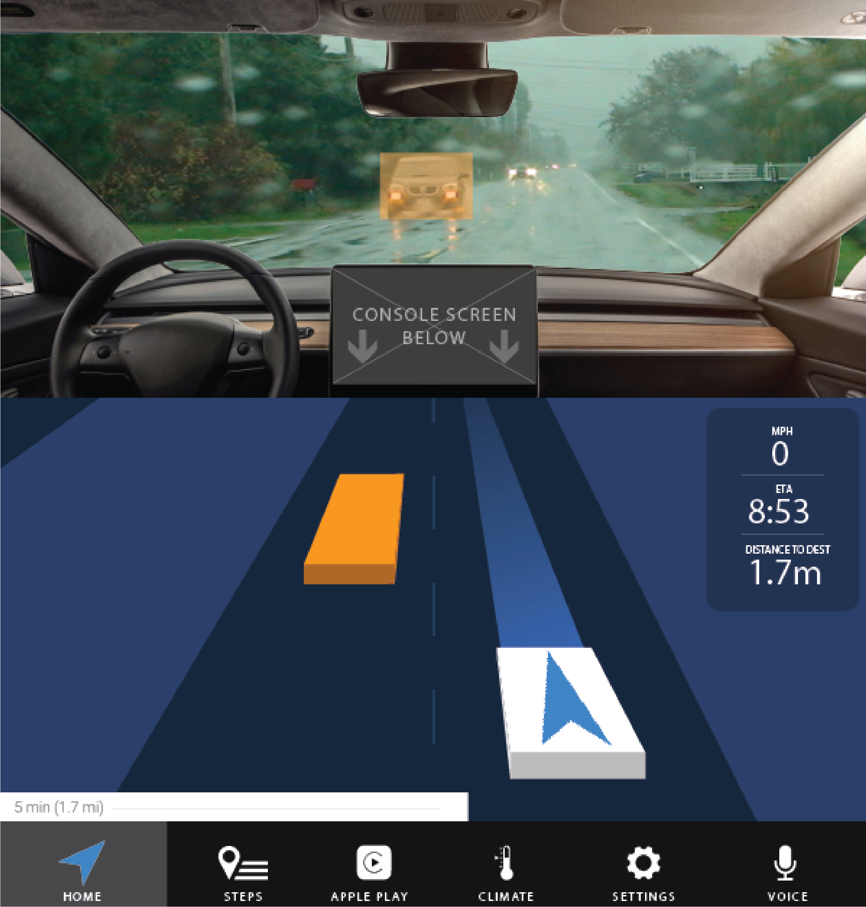Design Iteration 2
More user testing revealed issues with our version 2 prototype such as the 3-dimensional rectangles used to represent obstacles were unclear in what they represented. It also became apparent that people needed more clear interface features that would help them better understand what obstacles and information the car is detecting and why it is reacting a certain way. With these issues in mind, we added features to better acknowledge important road signs and stop lights, more accurately shaped obstacle representation of pedestrians and vehicles, and an opacity-based representation of severity for obstacles.
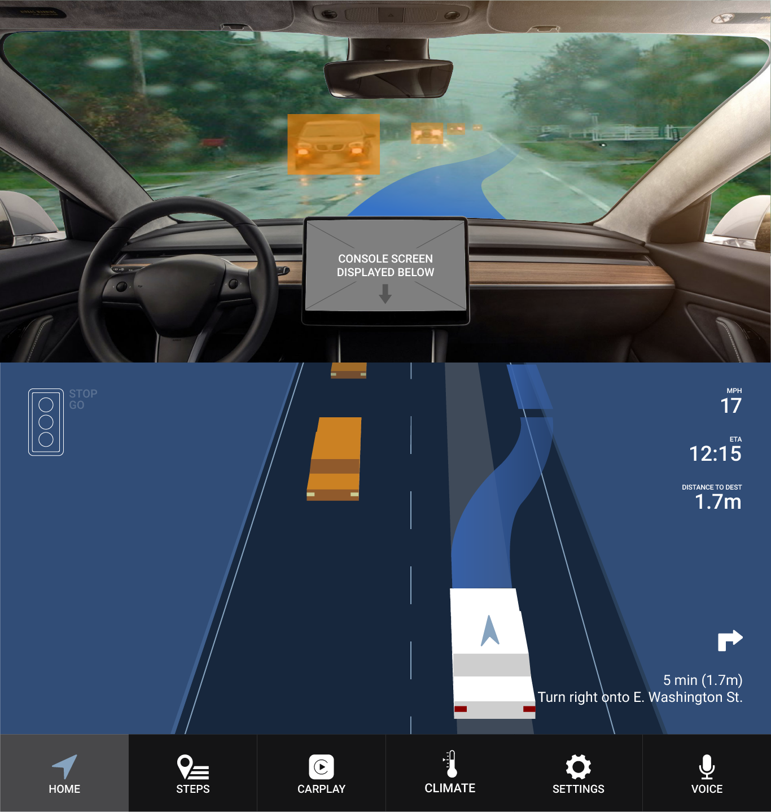 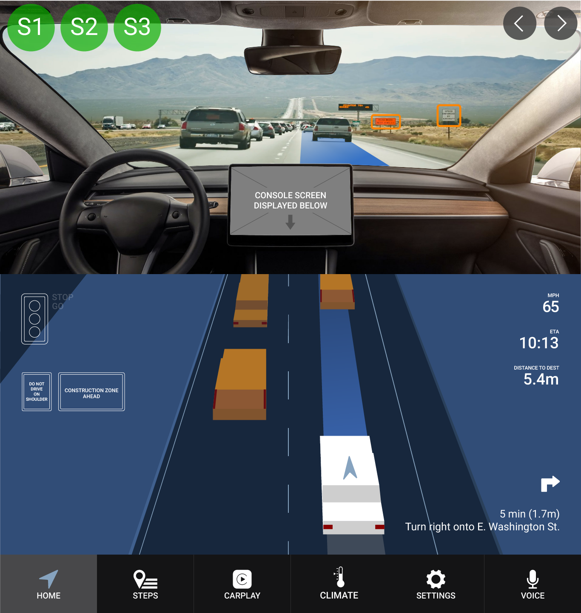
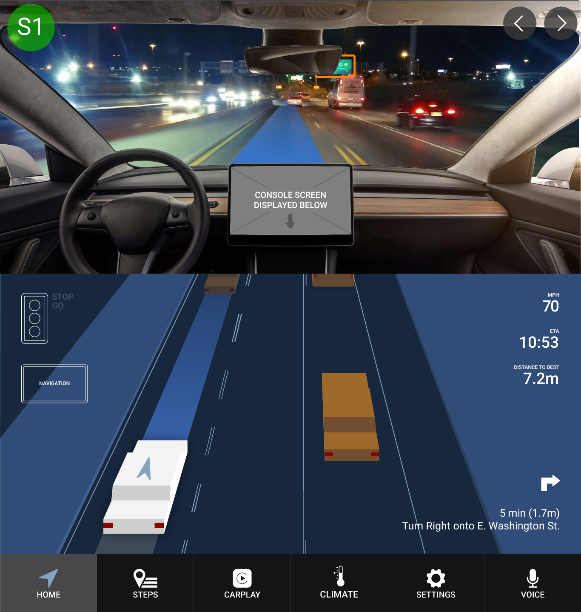
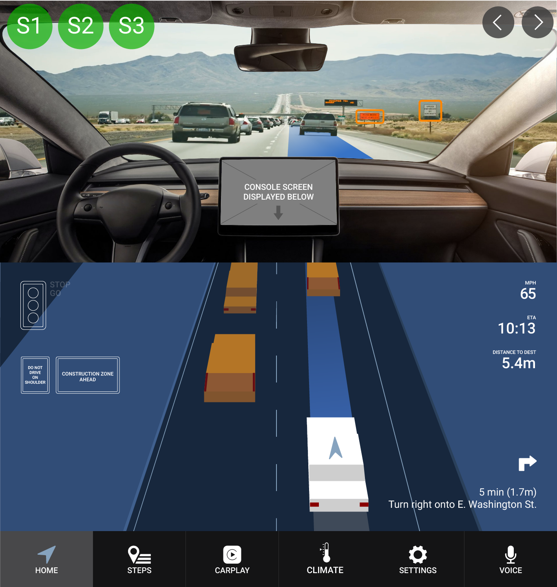
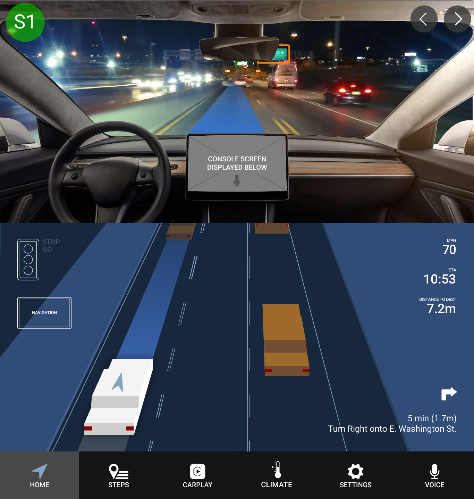
The Final Prototype
Interact with the final InVision prototype here.
The prototype consists of 4 different scenes: Highway, Night, Rain, and Urban.
The user can switch between the scenes by using the arrow buttons in the top right corner. External scenarios can be activated by clicking the green buttons in the top left corner of the screens. You can click anywhere at any time to reveal the clickable hotspots.
Note that those buttons would not be in the actual, physical vehicle interface - they are just there to interact with the digital prototype.
Reflection
Succeeding at Failing
This project tested our ability to learn from failing. Unfortunately, I feel that we did not take full advantage of this. We came across issues throughout our design process that could have served as platforms for rethinking our work, however, instead of capitalizing on this, we rather molded our design and process to avoid these issues. For instance, we did not take into account how the interior of autonomous cars would change in the future, and we used 2-dimensional prototyping method for a 3-dimensional interface.
As a result of all of this, we did not arrive at a novel solution. Heads up displays and console displays already exist, and our solution only solved a few more issues that did not seem to be addressed by other solutions on the market or in concept. This project helped me realize how important it is to take advantage of early feedback and early failure.